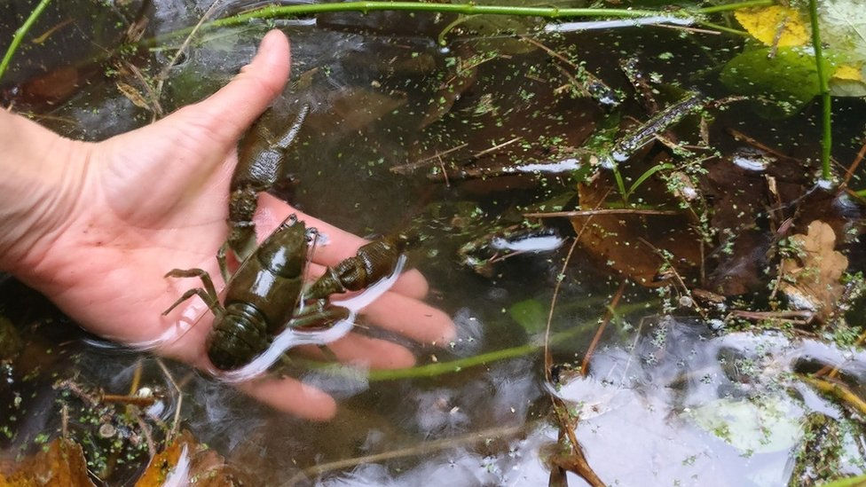
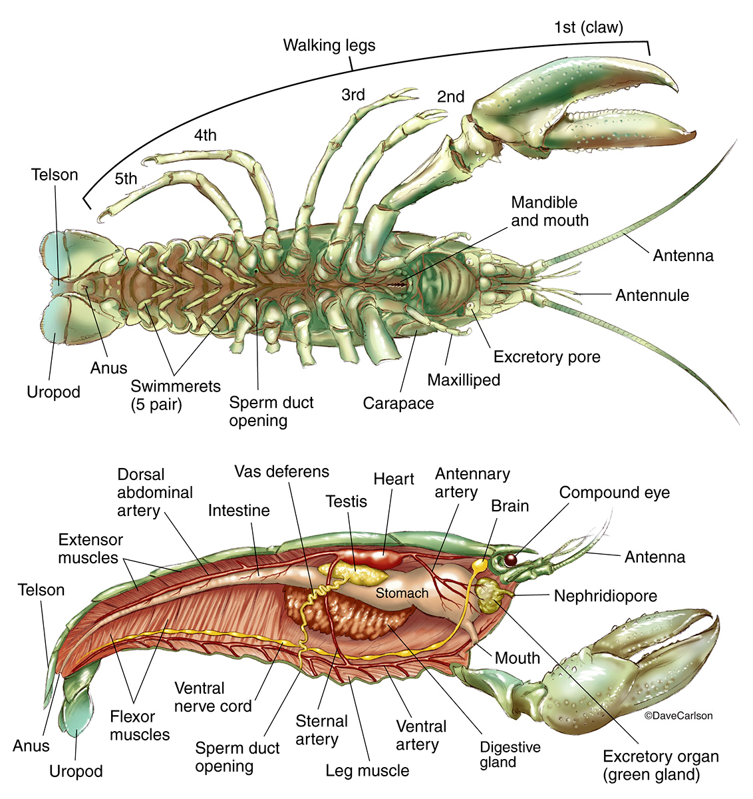
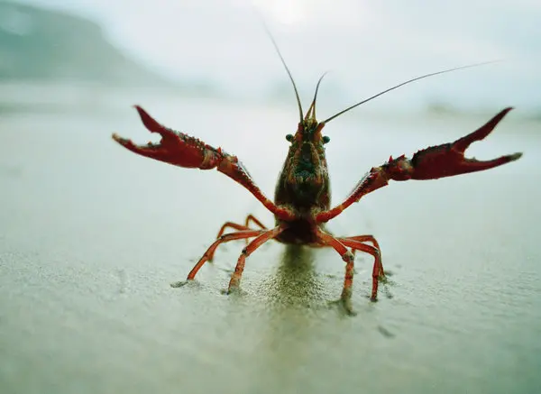
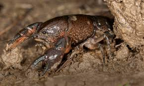

Habitat and Distribution
Crayfish make their homes in a variety of freshwater environments. From swiftly flowing rivers to the still waters of ponds and lakes, they are masters of adaptation. Their ability to thrive in diverse habitats has led to a wide distribution, with species found across the globe, each adapted to its unique environmental niche.
Physical Characteristics
Characterized by their robust claws and armored exoskeletons, crayfish are the warriors of the aquatic realm. Their striking appearance, often adorned with hues of green, red, or brown, not only serves as camouflage but also as a warning to potential predators of their formidable defenses.
Social Behavior
Despite their rugged exterior, crayfish engage in surprisingly complex social interactions. They communicate through a series of tactile and chemical signals, which govern their behaviors from mating rituals to territorial disputes. This intricate social structure is a testament to the evolutionary sophistication of these seemingly simple creatures.
Conservation Concerns
The balance of crayfish populations is delicate, with many species facing threats from habitat destruction, pollution, and the introduction of invasive species. The preservation of their habitats is essential for maintaining the biodiversity of freshwater ecosystems, highlighting the need for conservation efforts to protect these remarkable creatures and their environment.